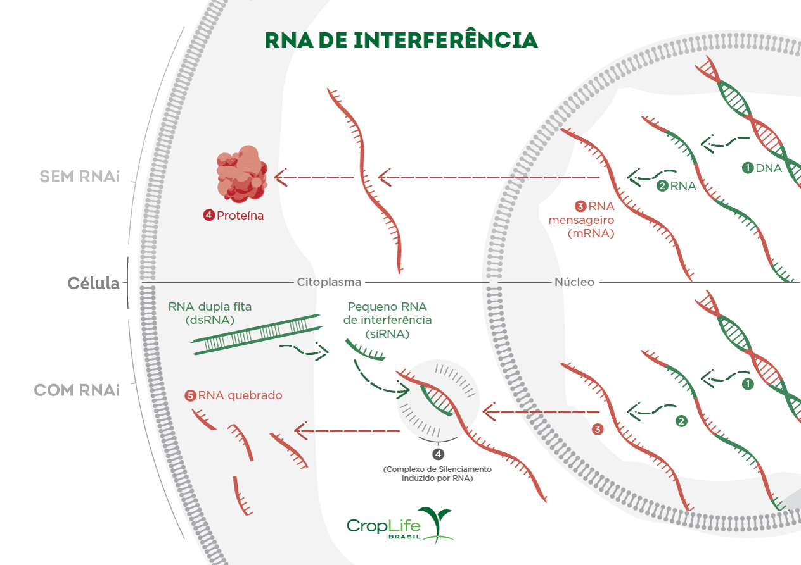

O RNA de interferência, também conhecido como RNAi foi descoberto na década de 1990. A compreensão desse mecanismo revolucionou a maneira com que o funcionamento da célula era visto e os pesquisadores, Andrew Z Fire e Craig C Mello, responsáveis pela descrição do RNAi foram agraciados com o prêmio Nobel em medicina e fisiologia no ano de 2006.
Com exceção de bactérias e vírus, o mecanismo de RNAi está presente em todos os organismos vivos, ou seja, ele já existe naturalmente nas células do nosso corpo e por isso é tão importante.
Ficou curioso? Segue com a gente que você irá descobrir como o RNA de interferência funciona e como ele foi transformado em uma importante tecnologia para a saúde humana, animal e no cultivo de plantas.
RNA de interferência, uma descoberta inesperada
O primeiro indício da existência do mecanismo de RNA de interferência, aconteceu quando pesquisadores trabalharam para aumentar a intensidade da cor violeta nas flores de petúnias.
Nesse experimento, os cientistas introduziram cópias adicionais do gene responsável por induzir a cor violeta das flores. Ao contrário do esperado, as petúnias geneticamente modificadas passaram a produzir flores com regiões brancas, o que mostrava um bloqueio parcial ou total do pigmento violeta (um silenciamento). Esse resultado inesperado ficou sem explicação por alguns anos.
Após anos de pesquisa e experimentos para elucidar o silenciamento ocorrido nas petúnias, em 1998 os pesquisadores Andrew Z Fire e Craig C Mello publicaram um trabalho descrevendo o mecanismo de RNA de interferência e mostravam o seu funcionamento em células de um nematoide, o Caenorhabditis elegans.
Aplicação do RNA de interferência na agricultura
Doenças e pragas que afetam plantas podem ser combatidas com a engenharia genética por meio da tecnologia de RNA de interferência (RNAi), que permite às plantas produzirem moléculas capazes de silenciar genes específicos de organismos nocivos. Essa estratégia tem sido usada no desenvolvimento de culturas resistentes, como a mandioca transgênica criada para combater a estria negra, uma grave ameaça à segurança alimentar na África, e já foi aplicada também em plantas de mamão no Brasil, seguindo o exemplo bem-sucedido do Havaí. O Canadá foi pioneiro no cultivo comercial de plantas transgênicas com RNAi, seguido pelos Estados Unidos e, posteriormente, pelo Brasil, que aprovou em 2011 um feijão resistente ao vírus do mosaico dourado desenvolvido pela EMBRAPA, embora este ainda não tenha sido comercializado.
Primeiro produto com RNAi para humanos
Em 2018, a FDA aprovou o primeiro fármaco com tecnologia de RNA de interferência (RNAi) para uso humano, e a Anvisa também autorizou sua comercialização no Brasil em 2020. O medicamento consiste em nanopartículas direcionadas ao fígado que contêm siRNA capaz de silenciar o gene mutante responsável pela amiloidose hereditária de transtirretina, uma doença que causa acúmulo de proteínas anormais, afetando coração e sistema nervoso. Em testes clínicos com 225 pacientes, o tratamento melhorou a velocidade de caminhada nos que o receberam, enquanto o grupo controle apresentou piora.